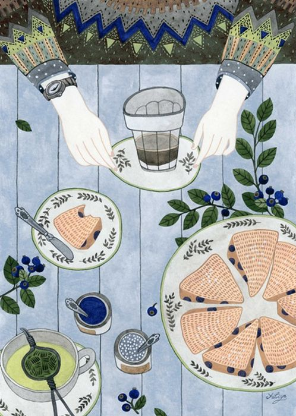

The Death of Paper (Which Never Happened)
Alessandro Ludovico
In our present digital era, the ‘death of paper’ has become a plausible
concept, widely expected to materialise sooner or later. The ‘digitisation
of everything’ explicitly threatens to supplant every single ‘old’
medium (anything carrying content in one way or another), while
claiming to add new qualities, supposedly essential for the contemporary
world: being mobile, searchable, editable, perhaps shareable. And
indeed, all of the ‘old’ media have been radically transformed from
their previous forms and modalities – as we have seen happen with
records, radio and video. On the other hand, none of these media ever
really disappeared; they ‘merely’ evolved and transformed, according
to new technical and industrial requirements.1
